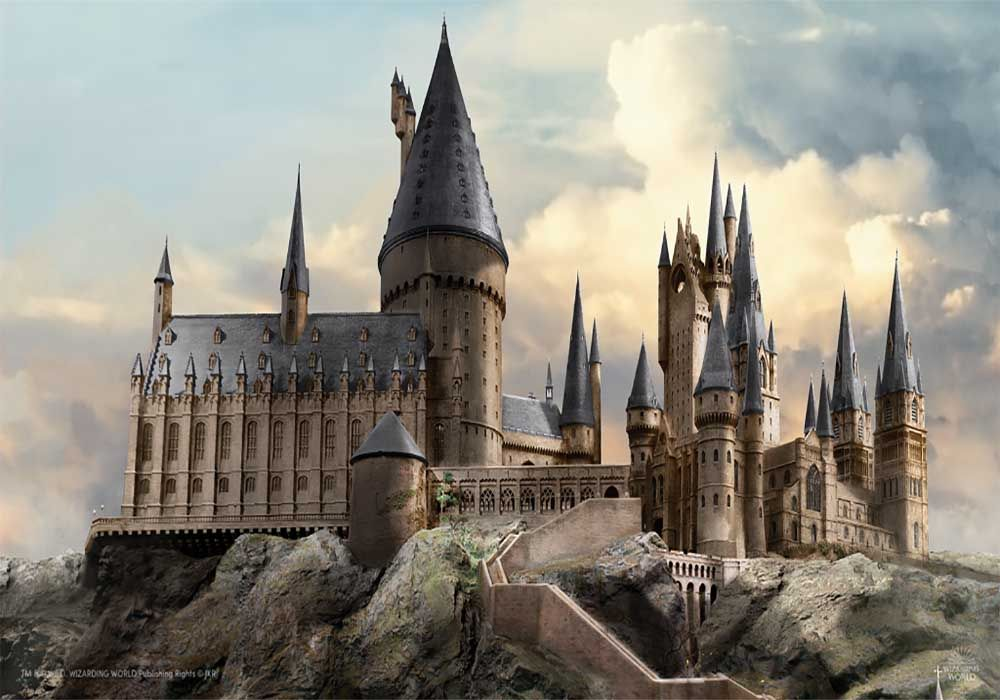

Author: J.K.Rowling

She was born in England in 31 July 1965. Rowling graduated from the
University of Exeter in 1987 and began working temp jobs as a
bilingual secretary.
In 1990, the idea for the characters of
Harry Potter came to her while she waited on a delayed train. She
wrote the first Harry Potter novel, Harry Potter and the Philosopher's
Stone (1997), while experiencing relative poverty as a single parent.
Forbes named her the world's highest-paid author in 2008, 2017
and 2019.
Hogwarts

Hogwarts School of Witchcraft and Wizardry is a British boarding
school of magic for students aged eleven to eighteen.
Founded in
the 10th century by Godric Gryffindor, Rowena Ravenclaw, Helga
Hufflepuff and Salazar Slytherin, Hogwarts was established in the
Highlands of Scotland to educate young wizards and witches as well as
to keep students safe from muggle persecution.
Hogwarts educated
most wizarding children in the United Kingdom and its surrounding
areas, keeping its location hidden from other wizarding schools and
muggles.
Albus Dumbledore
He is the headmaster of Hogwarts and he is the founder and leader of
the Order of the Phoenix, an organisation dedicated to fighting Lord
Voldemort.
He is a mentor of Harry Potter.Dumbledore is a very wise man who knows
that Harry is going to have to learn a few hard lessons to prepare him
for what may be coming in his life. He allows Harry to get into what
he wouldn't allow another pupil to do, and he also unwillingly permits
Harry to confront things he’d rather protect him from.